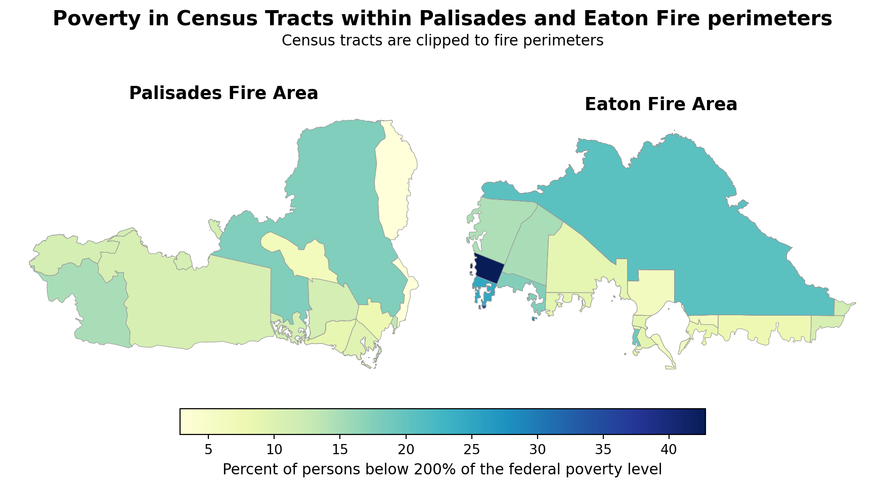

Code
import pandas as pd
import numpy as np
import os
import geopandas as gpd
import xarray as xr
import matplotlib as mpl
import matplotlib.pyplot as plt
import contextily as ctxThe Eaton and Palisades Fires reshaped large swaths of the Los Angeles foothills in early 2025. In this post we go through a remote-sensing workflow that converts Landsat 8 surface reflectance into true and false-color composite maps, overlays official fire perimeters, and links the impacted footprints to poverty data from the EPA’s Environmental Justice Index (EJI) to highlight economically vulnerable census tracts caught within the burn scars, and identify an environmental injustice if it exists.
pandas, geopandas, numpy, and xarray.matplotlib.In this notebook we use three datasets:
1) Palisades & Eaton fire perimeters (Los Angeles County NIFC)
The first dataset contains fire perimeter polygons delineating burn footprints for the Palisades and Eaton wildfires of 2025. It comes from the FIRIS (Fire Integrated Real-time Intelligence System) infrared aicraft system in collaboration with the NIFC (National Interagency Fire Center. The data was accessed 2025-12-22 from ArcGIS Online. For this analysis we use just the .shp file in the folder.
2) Landsat 8 Collection 2 Level-2 surface reflectance
The second dataset is a NetCDF containing multispectral surface reflectance information from (RGB, NIR, SWIR) from the Landsat 8 satellite. This data was downloaded from Microsoft Planetary Computer on 2025-11-22, and is read as an xarrayDataset.
We use five bands in our analysis:
Red/Green/Blue (Bands 4/3/2): true-color composites.
Near-Infrared (NIR08 - Band 5): vegetation response.
Short-Wave Infrared (SWIR22 Bands 6/7): moisture/char sensitivity, used to highlight burn scars via false-color composites.
3) Environmental Justice Index (EJI)
The final dataset we use is the census tract-level poverty indicator sourced from the 2018–2022 Census Bureau American Community Survey (ACS) 5-year data and downloaded from the Agency for Toxic Substances and Disease Registry. We use the “E_POV200” variable defined in the metadata as “Percentage of persons with income below 200% of the federal poverty level” to map socioeconomic vulnerability in tracts intersecting the fire perimeters.
Background information and Landsat band combinations:
[1] Why is that Forest Red and That Cloud Blue? (2014, March 4). Nasa.gov; NASA Earth Observatory. https://earthobservatory.nasa.gov/features/FalseColor
[2] What are the band designations for the Landsat satellites? (2025, July 11). USGS. https://www.usgs.gov/faqs/what-are-band-designations-landsat-satellites
[3] Common Landsat Band Combinations. (2021, November 12). USGS. https://www.usgs.gov/media/images/common-landsat-band-combinations
This notebook produces this final output of poverty levels in each fires burn area.

import pandas as pd
import numpy as np
import os
import geopandas as gpd
import xarray as xr
import matplotlib as mpl
import matplotlib.pyplot as plt
import contextily as ctx# Eaton fire perimeter
fp = os.path.join('data', 'Eaton_Perimeter_20250121', 'Eaton_Perimeter_20250121.shp')
eaton = gpd.read_file(fp)
# Palisades fire perimeter
fp = os.path.join('data', 'Palisades_Perimeter_20250121', 'Palisades_Perimeter_20250121.shp')
palisades = gpd.read_file(fp)
# Landsat 8
landsat = xr.open_dataset(
"data/landsat8-2025-02-23-palisades-eaton.nc")
# Environmental Justice Index
eji = gpd.read_file("data/EJI_2024_California/EJI_2024_California.gdb")We start by verifying the coordinate reference system (CRS) of perimeter data and check that both are projected.
# Fire perimeter data exploration
print(f"The CRS for the Eaton Perimeter is {eaton.crs}")
print(f"The CRS for the Palisades Perimeter is {palisades.crs}")
print(f"The Eaton Perimeter is projected: {eaton.crs.is_projected}")
print(f"The Palisades Perimeter is projected: {palisades.crs.is_projected}")The CRS for the Eaton Perimeter is EPSG:3857
The CRS for the Palisades Perimeter is EPSG:3857
The Eaton Perimeter is projected: True
The Palisades Perimeter is projected: TrueBoth perimeters share a projected CRS and schema.
Before we move on lets check for no-data values in our landsat raster and remove them if they exist, confirming with an assert.
# Fill NaNs with zero if any
if landsat.to_array().isnull().any():
landsat = landsat.fillna(0)
# Assert no NaNs remain
assert not landsat.to_array().isnull().any(), "NaNs remain after fill."Landsat arrives as an xarray.Dataset with georeferencing stored in spatial_ref. Because xarray sometimes drops CRS info, we explicitly write it back so raster/vector overlays align perfectly.
# Get the CRS of landsat
landsat_crs = landsat.spatial_ref.crs_wkt
# Recover the geospatial information by using rio.write_crs()
landsat = landsat.rio.write_crs(landsat_crs)
# Print the CRS of the updated dataset.
print(landsat.rio.crs)
# Let's also match our fire perimeter data to the landsat crs
palisades = palisades.to_crs(landsat.rio.crs)
eaton = eaton.to_crs(landsat.rio.crs)EPSG:32611In order to visualize the burned areas we build a true-color Landsat image by stacking the red, green, and blue bands, then filling no-data again to be certain. Casting to a float ensures safe color scaling.
# Build and clean RGB
rgb = landsat[["red", "green", "blue"]].to_array()
rgb = rgb.where(np.isfinite(rgb), 0).astype(float)
fig, ax = plt.subplots(figsize=(8, 8))
_ = rgb.plot.imshow(
ax=ax,
vmin=8200, vmax=13500,
robust=True,
add_colorbar=False
)
# Overlays
palisades.boundary.plot(ax=ax, color="red", linewidth=1)
eaton.boundary.plot(ax=ax, color="red", linewidth=1)
# Labels
p_center = palisades.geometry.centroid.iloc[0]
e_center = eaton.geometry.centroid.iloc[0]
dx, dy = 100, -5000
ax.text(p_center.x + dx, p_center.y + dy, "Palisades Fire",
color="black", fontsize=10, ha="left", va="center",
bbox=dict(facecolor="white", edgecolor="black", boxstyle="round,pad=0.2", alpha=0.8))
ax.text(e_center.x + dx, e_center.y + dy, "Eaton Fire",
color="black", fontsize=10, ha="left", va="center",
bbox=dict(facecolor="white", edgecolor="black", boxstyle="round,pad=0.2", alpha=0.8))
# Lock view to the raster extent
ax.set_xlim(float(rgb.x.min()), float(rgb.x.max()))
ax.set_ylim(float(rgb.y.min()), float(rgb.y.max()))
ax.set_title("Landsat True Color (Palisades/Eaton)", fontsize=12, fontweight="bold")
ax.set_axis_off()
plt.tight_layout()
plt.show()
Despite stretching the colormap (vmin=8200, vmax=13500) to more clearly show burn scars, they still appear as subtle dark patches against the surrounding vegetation, let’s try a false-color map.
A false-color rendering remaps bands to emphasize burn severity:
SWIR22 as red
NIR08 as green
Red as blue.
This makes burned areas stand out more clearly. We then reproject the fire perimeters to the Landsat CRS, overlay them in red, and label each fire so the false-color composite directly highlights where and how severely the Palisades and Eaton fires affected the landscape.
# Build false-color stack (SWIR–NIR–Red)
fci = landsat[["swir22", "nir08", "red"]].to_array()
fci = fci.where(np.isfinite(fci), 0).astype(float)
fig, ax = plt.subplots(figsize=(8, 8))
_ = fci.plot.imshow(
ax=ax,
vmin=7000,
vmax=15000,
robust=True,
add_colorbar=False
)
# Overlays
palisades.boundary.plot(ax=ax, color="red", linewidth=1)
eaton.boundary.plot(ax=ax, color="red", linewidth=1)
# Labels
p_center = palisades.geometry.centroid.iloc[0]
e_center = eaton.geometry.centroid.iloc[0]
dx, dy = 100, -5000
ax.text(p_center.x + dx, p_center.y + dy, "Palisades Fire",
color="black", fontsize=10, ha="left", va="center",
bbox=dict(facecolor="white", edgecolor="black", boxstyle="round,pad=0.2", alpha=0.8))
ax.text(e_center.x + dx, e_center.y + dy, "Eaton Fire",
color="black", fontsize=10, ha="left", va="center",
bbox=dict(facecolor="white", edgecolor="black", boxstyle="round,pad=0.2", alpha=0.8))
# Lock view to raster extent
ax.set_xlim(float(fci.x.min()), float(fci.x.max()))
ax.set_ylim(float(fci.y.min()), float(fci.y.max()))
ax.set_title("Landsat False Color (Palisades/Eaton)", fontsize=12, fontweight="bold")
ax.set_axis_off()
plt.tight_layout()
plt.show()
SWIR–NIR–red composites render burned areas in red hues and healthy vegetation in greens, so the perimeter overlays become immediately interpretable.
Now we will build tract-level subsets for each fire perimeter to map E_POV200 (percent of persons below 200% of federal poverty level). The goal is to see whether high-poverty census tracts overlap the Palisades and Eaton fire footprints.
First we need to match the CRS of our EJI data to our fire perimeters.
eji = eji.to_crs(palisades.crs)
assert eji.crs == eaton.crsGeoPandas Spatial joins sjoin isolates the tracts intersecting each fire perimeter.
# EJI tracts overlapping Palisades
eji_pali = gpd.sjoin(
eji, palisades[["geometry"]],
how="inner", predicate="intersects"
).drop(columns=["index_right"])
# EJI tracts overlapping Eaton
eji_eat = gpd.sjoin(
eji, eaton[["geometry"]],
how="inner", predicate="intersects"
).drop(columns=["index_right"])GeoPandas clipping cuts the tracts to the fire perimeter boundary vector lines. Think cookie cutting.
# Clip EJI to Palisades
palisades_clip = gpd.clip(eji_pali, palisades)
# Clip EJI to Eaton
eaton_clip = gpd.clip(eji_eat, eaton)Lastly, we compare poverty exposure for the tracts inside each perimeter. The goal of this map is too compare the census tracts within each fire boundary and determine if there is economic injustice within either area.
eji_variable = "E_POV200"
vmin = min(palisades_clip[eji_variable].min(), eaton_clip[eji_variable].min())
vmax = max(palisades_clip[eji_variable].max(), eaton_clip[eji_variable].max())
cmap = mpl.colormaps["YlGnBu"]
fig, (ax1, ax2) = plt.subplots(
1, 2, figsize=(9, 6.5), constrained_layout=True
)
# Palisades
palisades_clip.plot(
column=eji_variable, cmap=cmap, vmin=vmin, vmax=vmax,
linewidth=0.4, edgecolor="0.6", legend=False, ax=ax1
)
ax1.set_title("Palisades Fire Area", fontsize=13, fontweight="bold")
ax1.axis("off")
# Eaton
eaton_clip.plot(
column=eji_variable, cmap=cmap, vmin=vmin, vmax=vmax,
linewidth=0.4, edgecolor="0.6", legend=False, ax=ax2
)
ax2.set_title("Eaton Fire Area", fontsize=13, fontweight="bold")
ax2.axis("off")
# Color bar
sm = mpl.cm.ScalarMappable(norm=mpl.colors.Normalize(vmin=vmin, vmax=vmax), cmap=cmap)
cbar = fig.colorbar(sm, ax=[ax1, ax2], orientation="horizontal", fraction=0.05, pad=0.05)
cbar.set_label("Percent of persons below 200% of the federal poverty level", fontsize=11)
# Titles
fig.suptitle("Poverty in Census Tracts within Palisades and Eaton Fire perimeters",
fontsize=15, fontweight="bold", y=0.75)
fig.text(0.5, 0.70,
"Census tracts are clipped to fire perimeters",
ha="center", va="center", fontsize=11)
plt.show()
Overall, neither footprint is dominated by very high‑poverty tracts, but there’s a clear contrast: the Eaton perimeter includes a few tracts with markedly higher poverty shares (darker blues), while the Palisades tracts are mostly midrange to lower. This mirrors Los Angeles’ spatial pattern—more affluent coastal/Westside areas around Palisades versus pockets of higher economic vulnerability farther east—suggesting greater potential EJ concerns within parts of the Eaton area.